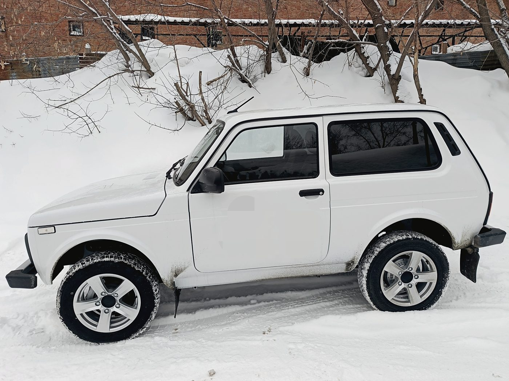
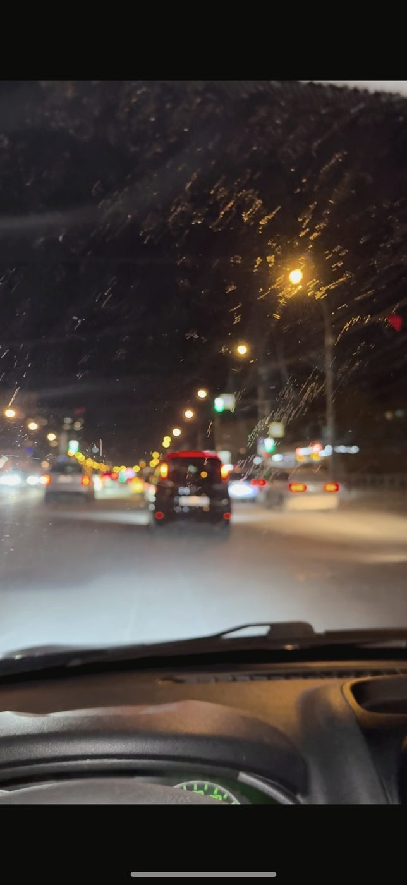
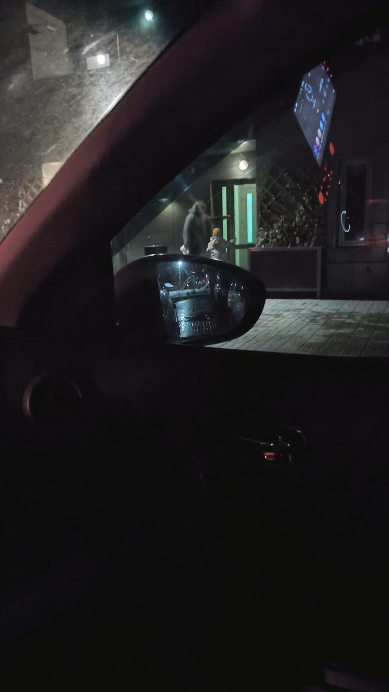
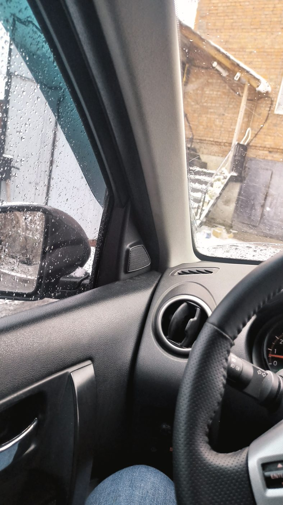
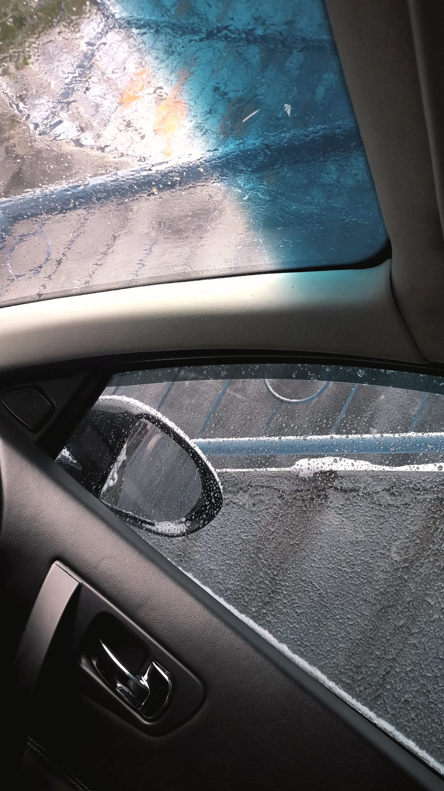
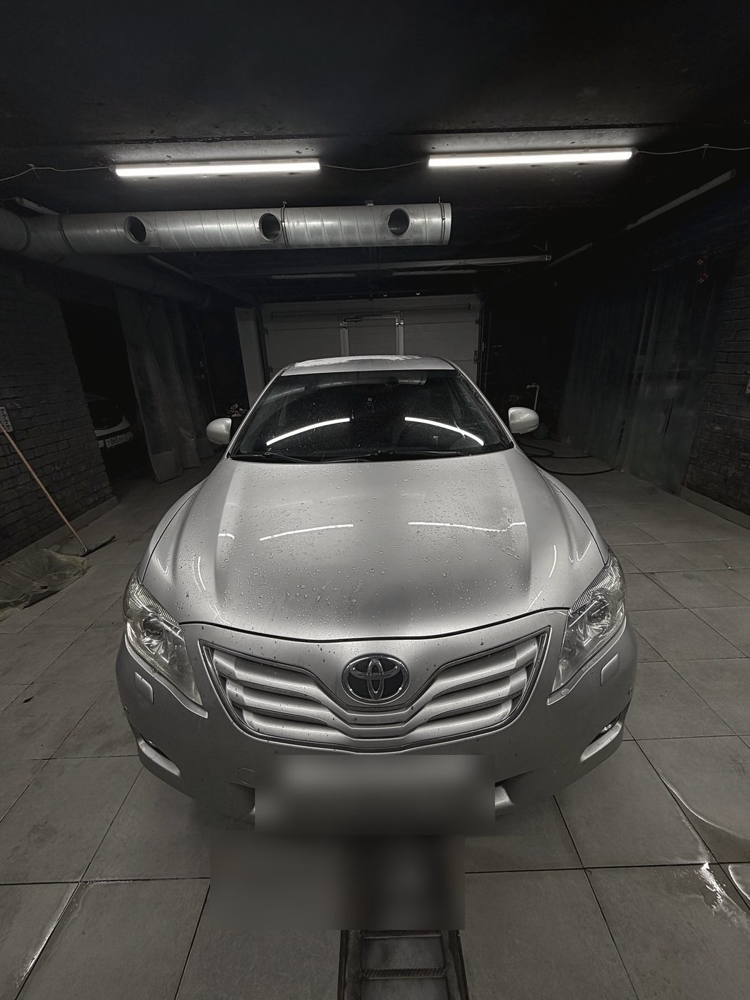
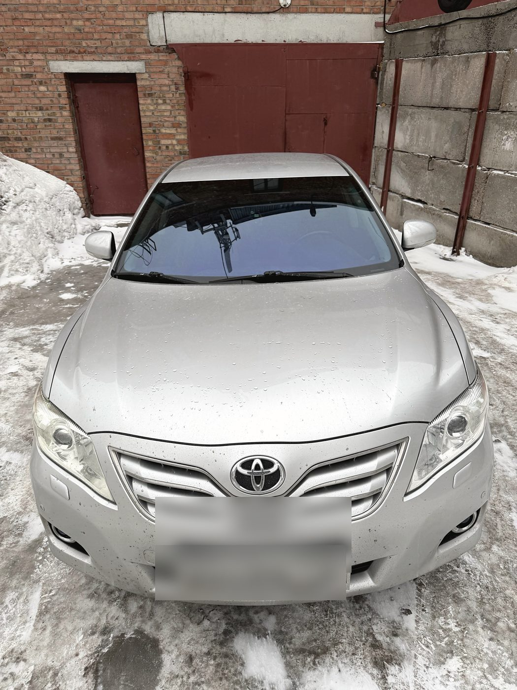
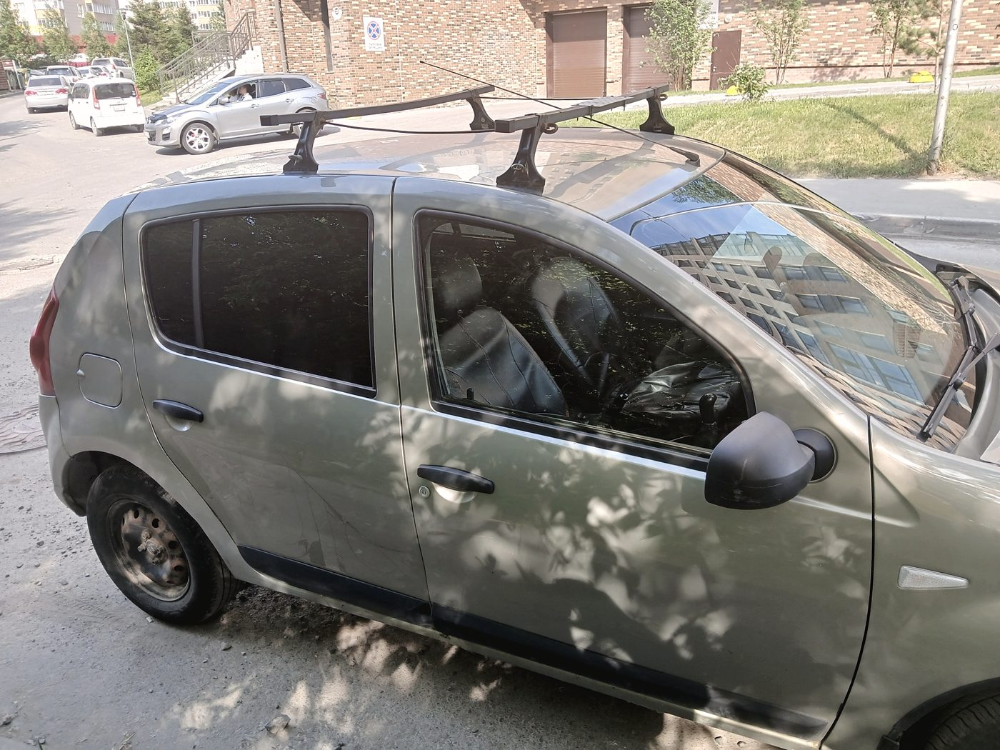
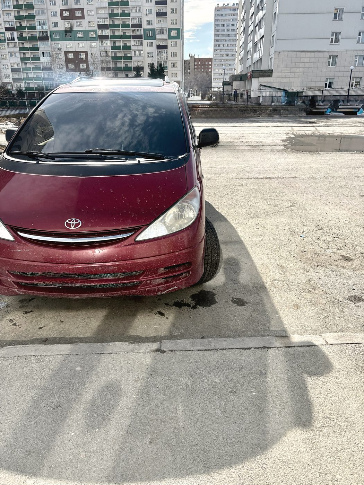
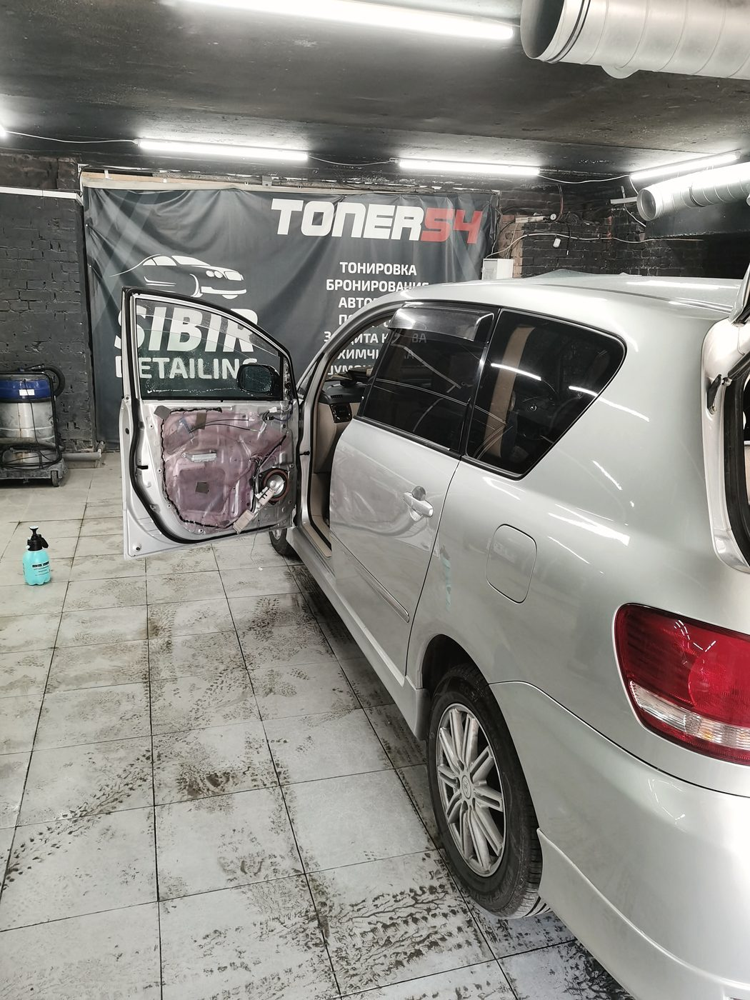

Задняя полусфера, Niva
Тот случай, когда стёкла снимать нельзя, а сделать надо. От звонка до выдачи — меньше суток.
Центр тонировки · Дзержинский район
Снаружи любая тонировка выглядит одинаково хорошо. Вопрос в другом: как вы будете видеть зеркала вечером и разметку в дождь. Поэтому мы показываем кадры из салона, а не только машину с улицы.

Взгляд из салона



Мы не ретушируем эти снимки и не поднимаем яркость. Тёмная плёнка на передних стёклах красиво выглядит на парковке и мешает при перестроении в сумерках — это надо знать до, а не после. Если вы приедете с задачей «сделайте максимально глухо», мы сначала покажем, как это выглядит изнутри.
Закон
Светопропускание измеряется в процентах: сколько света проходит через стекло с плёнкой. Для лобового и передних боковых норма установлена ГОСТом, для задних ограничений нет. Зелёным ниже отмечено то, что проходит проверку.
Мы измеряем светопропускание готового стекла прибором и говорим цифру до того, как вы уедете. Если вам нужна тонировка передних стёкол ниже нормы — мы объясним риск и не станем обещать, что «не остановят».


Что делаем
Замена старой плёнки и установка новой. Атермальные плёнки проходят по ГОСТу и при этом заметно снижают нагрев.
Съёмная и обычная. Считаем светопропускание вместе со стеклом, а не по паспорту плёнки.
Тонируем без снятия стёкол: не трогаем уплотнители, обогрев и антенны. На внедорожниках и универсалах — тоже.
Привезли свой материал — поставим. Не отказываем и не накручиваем за это, но за саму плёнку тогда не отвечаем.
Снимаем старую плёнку и чистим стекло от клея. После неудачной тонировки это первое, с чего придётся начать.
Комплексная мойка от 500 ₽, мойка двигателя, полировка кузова. Есть зал ожидания и запись.

Тот случай, когда стёкла снимать нельзя, а сделать надо. От звонка до выдачи — меньше суток.

Самый частый заказ: перед оставляем по норме, назад ставим то затемнение, которое нравится.

Много стекла и сложные формы. Считаем по площади, а не «по количеству дверей».
Честно
«Тонировщик по телефону не решает за мойку»
Отзыв в 2ГИС на одну звезду, 9 декабря 2025
Человеку по телефону сказали, что мойщик будет через полчаса. Он приехал, прождал ещё полчаса и выяснил, что мойка не работает. Второй отзыв — про химчистку салона, после которой пришлось ехать перемывать в другое место.
Мы центр тонировки. Мойка и химчистка у нас есть, но это не то, чем мы сильны, — и по телефону про них лучше спрашивать отдельно, а не через тонировщика.
Если вам нужна именно химчистка — скажите прямо, и мы честно ответим, стоит ли ехать к нам сегодня. За тонировку мы отвечаем полностью: 4,7 по 246 отзывам собраны на ней.
Отзывы · 4,7 из 5 по 246 оценкам в 2ГИС
«От звонка до результата меньше суток, затонировали заднюю полусферу на ниве без снятия стёкол»
Дмитрий · отзыв в 2ГИС, 7 марта 2026
Знаю данную контору уже более 5 лет. Списался, попросил сделать своей плёнкой — не отказали, вошли в положение, договорились в удобное для всех время, сделали всё быстро и качественно.
Андрей · 17 февраля 2026
Делал тонировку лобового и передних стёкол. Работа выполнена качественно, вид отличный.
Арсений · 30 декабря 2025
Не первый раз сюда обращаюсь по тонировке авто — делают быстро и качественно.
Отзыв в 2ГИС · 29 июня 2026
После замены лба принял решение обновить и бока — обращусь сюда же.
Андрей · 17 февраля 2026

Контакты